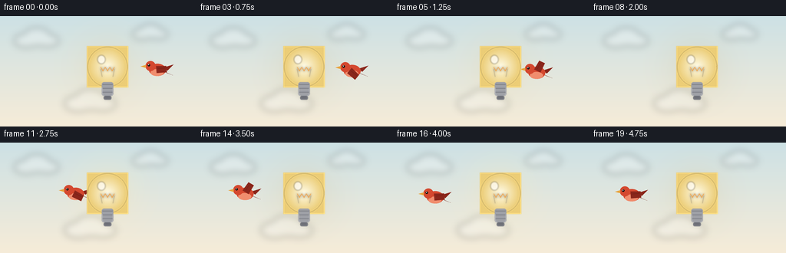
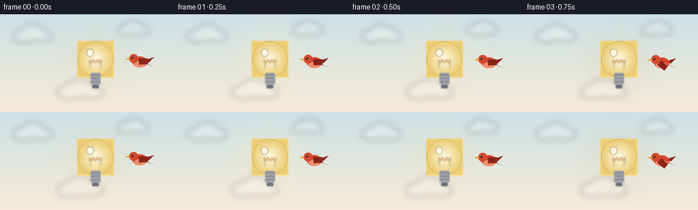

CODING AGENTS AS PIXEL WORLD MODELS
traex/Seed-2.1-Pro-0915 · dynamic_spatial_relationship_0043
点击播放 · 原生 RGB 像素
逐轮保存的候选
回放视频、检查图与代码变化。
每份候选均可单独播放。实际图片检查记录在下方工具轨迹中。
候选 01播放与检查图
点击播放 · 原生 RGB 像素


展开代码变化
--- 上一保存版本
+++ 本次保存版本
@@ -0,0 +1,207 @@
+"""Text-to-video generation for:
+"A bird is on the right of a lightbulb, then the bird flies behind the lightbulb."
+
+Pure numpy/PIL rendering at 4x supersampling, downsampled to 256x144 RGB.
+The bird is always composited before the opaque bulb, so passing the bulb
+silhouette reads unambiguously as flying *behind* it.
+"""
+import math
+
+import numpy as np
+from PIL import Image, ImageDraw, ImageFilter
+
+import artifact_io
+
+W, H = 256, 144
+N_FRAMES, FPS = 20, 4.0
+S = 4 # supersampling factor
+SW, SH = W * S, H * S
+
+BULB = (140.0, 66.0) # bulb glass center in normal-resolution pixels
+BULB_R = 26.0
+
+SKY_TOP = np.array([205, 225, 229], dtype=np.float32)
+SKY_BOT = np.array([246, 236, 216], dtype=np.float32)
+
+
+def smoothstep(t):
+ t = np.clip(t, 0.0, 1.0)
+ return t * t * (3.0 - 2.0 * t)
+
+
+def radial_glow(cx, cy, radius, rgb_in, rgb_out, alpha_in, alpha_out, gamma=1.5):
+ """RGBA supersampled layer with a soft radial gradient disc."""
+ pad = 4
+ x0, x1 = int(cx - radius) - pad, int(cx + radius) + pad + 1
+ y0, y1 = int(cy - radius) - pad, int(cy + radius) + pad + 1
+ xs = np.arange(x0, x1, dtype=np.float32)
+ ys = np.arange(y0, y1, dtype=np.float32)
+ xx, yy = np.meshgrid(xs, ys)
+ d = np.sqrt((xx - cx) ** 2 + (yy - cy) ** 2) / radius
+ k = np.clip(1.0 - d, 0.0, 1.0) ** gamma
+ rgb = rgb_out[None, None, :] + (rgb_in - rgb_out)[None, None, :] * k[..., None]
+ alpha = alpha_out + (alpha_in - alpha_out) * k
+ layer = np.dstack([rgb, np.broadcast_to(alpha[..., None], rgb.shape[:2] + (1,))]).astype(np.uint8)
+ img = Image.new("RGBA", (SW, SH), (0, 0, 0, 0))
+ img.paste(Image.fromarray(layer, "RGBA"), (x0, y0))
+ return img
+
+
+def build_background():
+ """Static sky gradient plus soft clouds, at supersampled resolution."""
+ t = np.linspace(0.0, 1.0, SH, dtype=np.float32)[:, None, None]
+ grad = SKY_TOP[None, None, :] * (1.0 - t) + SKY_BOT[None, None, :] * t
+ bg = np.repeat(grad, SW, axis=1)
+ img = Image.fromarray(bg.astype(np.uint8), "RGB").convert("RGBA")
+
+ clouds = Image.new("RGBA", (SW, SH), (0, 0, 0, 0))
+ cd = ImageDraw.Draw(clouds)
+ for cx, cy, s in [(48, 30, 1.0), (196, 22, 0.8), (118, 112, 1.15)]:
+ for dx, dy, rw, rh in [(-14, 2, 16, 9), (0, -3, 18, 12), (14, 2, 15, 8)]:
+ cx0 = (cx + dx * s - rw * s) * S
+ cy0 = (cy + dy * s - rh * s) * S
+ cd.ellipse([cx0, cy0, cx0 + 2 * rw * s * S, cy0 + 2 * rh * s * S],
+ fill=(255, 255, 255, 60))
+ clouds = clouds.filter(ImageFilter.GaussianBlur(18))
+ img.alpha_composite(clouds)
+ return img
+
+
+def build_bulb():
+ """Opaque lightbulb layer (normal resolution), plus a supersampled halo."""
+ cx, cy = BULB[0] * S, BULB[1] * S
+ r = BULB_R * S
+ layer = Image.new("RGBA", (SW, SH), (0, 0, 0, 0))
+
+ # Glass envelope: warm milky radial gradient.
+ glass = radial_glow(cx, cy, r,
+ np.array([255, 252, 234]), np.array([236, 205, 118]),
+ 255, 255, gamma=1.1)
+ layer.alpha_composite(glass)
+ d = ImageDraw.Draw(layer)
+ d.ellipse([cx - r, cy - r, cx + r, cy + r],
+ outline=(176, 146, 72, 200), width=max(2, S // 2))
+
+ # Filament with a soft warm glow.
+ glow = Image.new("RGBA", (SW, SH), (0, 0, 0, 0))
+ gd = ImageDraw.Draw(glow)
+ fz_y = cy + 3 * S
+ xs = np.linspace(cx - 9 * S, cx + 9 * S, 7)
+ pts = [(float(x), float(fz_y + (2.5 * S if i % 2 else -2.5 * S)))
+ for i, x in enumerate(xs)]
+ gd.line(pts, fill=(255, 150, 40, 255), width=max(2, S // 2))
+ gd.line([(cx - 9 * S, fz_y), (cx - 7 * S, cy + 13 * S)],
+ fill=(120, 110, 95, 255), width=max(1, S // 3))
+ gd.line([(cx + 9 * S, fz_y), (cx + 7 * S, cy + 13 * S)],
+ fill=(120, 110, 95, 255), width=max(1, S // 3))
+ layer.alpha_composite(glow.filter(ImageFilter.GaussianBlur(6)))
+ layer.alpha_composite(glow)
+
+ # Screw base beneath the glass.
+ bw, by0, by1 = 15 * S, cy + int(20 * S), cy + int(38 * S)
+ base = Image.new("RGBA", (SW, SH), (0, 0, 0, 0))
+ bd = ImageDraw.Draw(base)
+ bd.rounded_rectangle([cx - bw / 2, by0, cx + bw / 2, by1],
+ radius=3 * S, fill=(158, 160, 166, 255))
+ for k in range(3):
+ yy = by0 + (3 + k * 5) * S
+ bd.line([(cx - bw / 2 + S, yy), (cx + bw / 2 - S, yy)],
+ fill=(96, 98, 106, 255), width=max(2, S // 2))
+ bd.rounded_rectangle([cx - bw / 3, by1, cx + bw / 3, by1 + 5 * S],
+ radius=2 * S, fill=(110, 112, 120, 255))
+ layer.alpha_composite(base)
+
+ # Specular highlight.
+ hl = Image.new("RGBA", (SW, SH), (0, 0, 0, 0))
+ hd = ImageDraw.Draw(hl)
+ hd.ellipse([cx - 13 * S, cy - 15 * S, cx - 3 * S, cy - 4 * S],
+ fill=(255, 255, 255, 170))
+ layer.alpha_composite(hl.filter(ImageFilter.GaussianBlur(3)))
+
+ halo = radial_glow(cx, cy, 88 * S,
+ np.array([255, 226, 150]), np.array([255, 240, 200]),
+ 100, 0, gamma=2.0)
+ bulb = layer.resize((W, H), Image.Resampling.LANCZOS)
+ return bulb, halo
+
+
+def draw_bird(phase, flying, cx, cy):
+ """Side-view bird facing left, returned as a supersampled RGBA layer."""
+ layer = Image.new("RGBA", (SW, SH), (0, 0, 0, 0))
+ d = ImageDraw.Draw(layer)
+ red, dark_red, belly = (212, 72, 47, 255), (138, 38, 27, 255), (240, 141, 110, 255)
+ beak_c = (232, 163, 61, 255)
+
+ # Tail feathers (behind the body).
+ d.polygon([(cx + 8 * S, cy - 3 * S), (cx + 21 * S, cy - 7 * S),
+ (cx + 13 * S, cy + 1 * S)], fill=dark_red)
+ d.polygon([(cx + 8 * S, cy + 2 * S), (cx + 20 * S, cy + 7 * S),
+ (cx + 12 * S, cy + 4 * S)], fill=(110, 30, 22, 255))
+
+ # Body and lighter belly.
+ d.ellipse([cx - 11 * S, cy - 8 * S, cx + 11 * S, cy + 8 * S], fill=red)
+ d.ellipse([cx - 9 * S, cy - 1 * S, cx + 8 * S, cy + 8 * S], fill=belly)
+
+ # Head, beak, eye.
+ hx, hy = cx - 9 * S, cy - 5 * S
+ d.ellipse([hx - 6.5 * S, hy - 6.5 * S, hx + 6.5 * S, hy + 6.5 * S], fill=red)
+ d.polygon([(hx - 6 * S, hy - 1.5 * S), (hx - 13 * S, hy + 0.5 * S),
+ (hx - 6 * S, hy + 2.5 * S)], fill=beak_c)
+ d.ellipse([hx - 3.6 * S, hy - 2.6 * S, hx - 0.4 * S, hy + 0.6 * S], fill=(20, 18, 16, 255))
+ d.ellipse([hx - 3.0 * S, hy - 2.1 * S, hx - 2.0 * S, hy - 1.1 * S], fill=(255, 255, 255, 255))
+
+ # Flapping wing on a square layer so rotation keeps the shoulder anchor fixed.
+ side = 48 * S
+ wing = Image.new("RGBA", (side, side), (0, 0, 0, 0))
+ wd = ImageDraw.Draw(wing)
+ o = side // 2
+ wd.polygon([(o, o - 2 * S), (o + 13 * S, o - 4 * S),
+ (o + 15 * S, o + 4 * S), (o + 2 * S, o + 7 * S)], fill=dark_red)
+ wd.line([(o + 3 * S, o + 1 * S), (o + 12 * S, o - 1 * S)],
+ fill=(90, 24, 18, 255), width=max(1, S // 3))
+ angle = math.degrees(math.sin(phase) * 0.95) if flying else -8.0
+ wing = wing.rotate(angle, resample=Image.Resampling.BICUBIC, expand=False)
+ shoulder_x, shoulder_y = cx - 2 * S, cy - 3 * S
+ layer.alpha_composite(wing, (int(shoulder_x - side / 2), int(shoulder_y - side / 2)))
+ return layer
+
+
+def bird_position(i):
+ if i <= 2:
+ t = 0.0
+ elif i >= 16:
+ t = 1.0
+ else:
+ t = (i - 2) / 14.0
+ p = smoothstep(t)
+ x = 205.0 + (55.0 - 205.0) * p
+ flying = 2 < i < 16
+ bob = math.sin(t * 2.0 * math.pi) * 4.0 if flying else math.sin(i * 0.9) * 1.4
+ y = 70.0 + bob
+ return x, y, flying
+
+
+def main():
+ background = build_background()
+ bulb, halo = build_bulb()
+ frames = []
+ for i in range(N_FRAMES):
+ frame = background.copy()
+ # Gently flickering bulb halo.
+ flicker = 0.9 + 0.1 * math.sin(i * 1.3)
+ frame.alpha_composite(halo.point(lambda v: int(v * flicker)))
+ x, y, flying = bird_position(i)
+ phase = i * 1.5 if flying else 0.0
+ frame.alpha_composite(draw_bird(phase, flying, x * S, y * S))
+ # Opaque bulb drawn after the bird => the bird is hidden while behind it.
+ frame.alpha_composite(bulb.resize((SW, SH), Image.Resampling.LANCZOS))
+ frames.append(np.asarray(frame.resize((W, H), Image.Resampling.LANCZOS).convert("RGB"),
+ dtype=np.uint8))
+
+ frames = np.stack(frames, axis=0)
+ artifact_io.save(frames, ".")
+ print(f"saved {frames.shape} frames")
+
+
+if __name__ == "__main__":
+ main()
可观测工具轨迹
实际执行的命令与返回图片。
命令 1exit 0
/bin/bash -lc 'cat prompt.txt GENERATION_RULES.md task_spec.json 2>/dev/null; ls -la'
命令 2exit 0
/bin/bash -lc 'cat artifact_io.py'
命令 3exit 0
/bin/bash -lc 'python3 -c "import numpy, PIL; print(numpy.__version__, PIL.__version__)"'
命令 4exit 0
/bin/bash -lc 'cd . && time python3 generate.py && ls -la pixels.npz frames inspection.png index.html'
保存候选 1 份；完成命令 4 次；可验证图片返回 0 张。原始 API 响应与完整日志保留在本地。